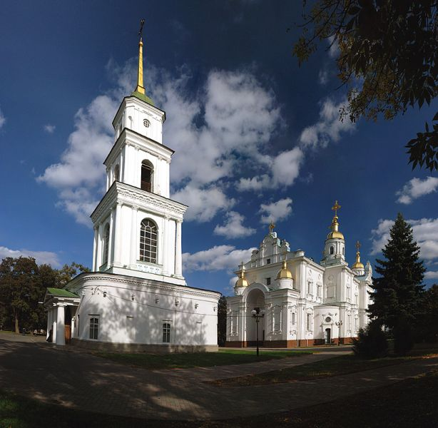
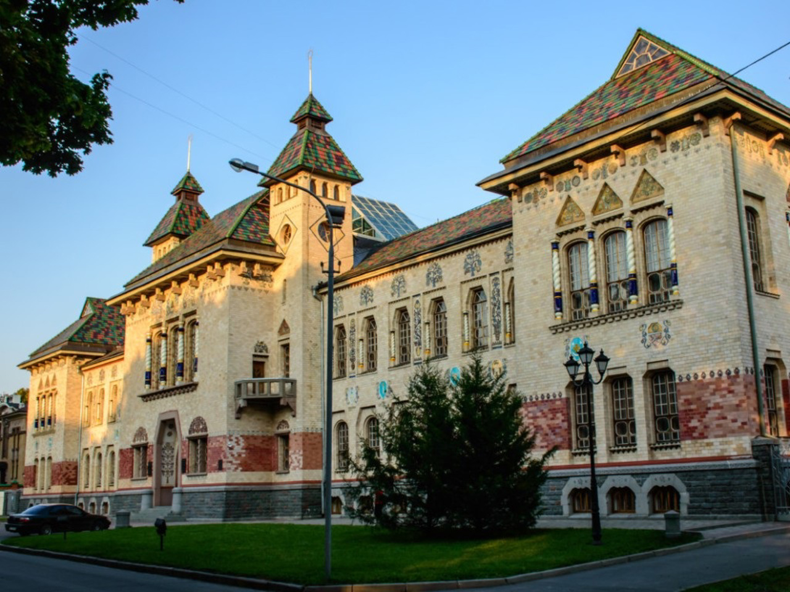
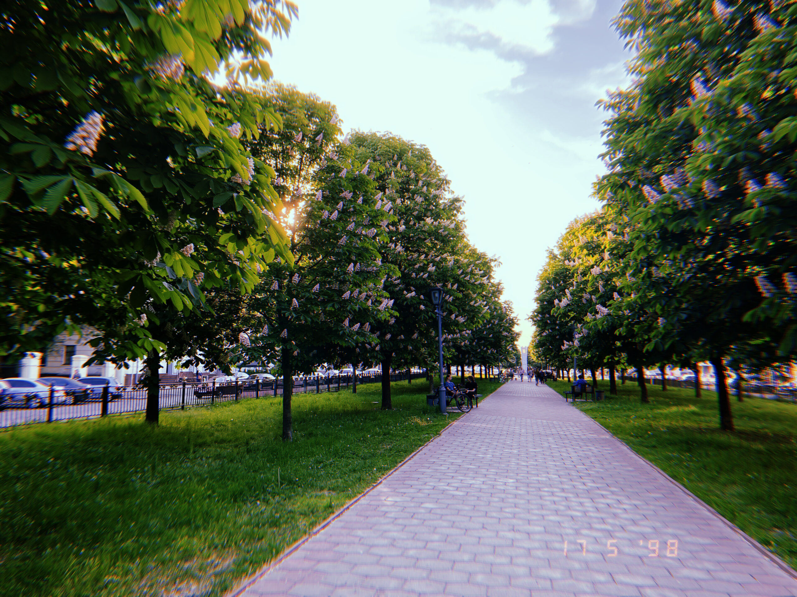
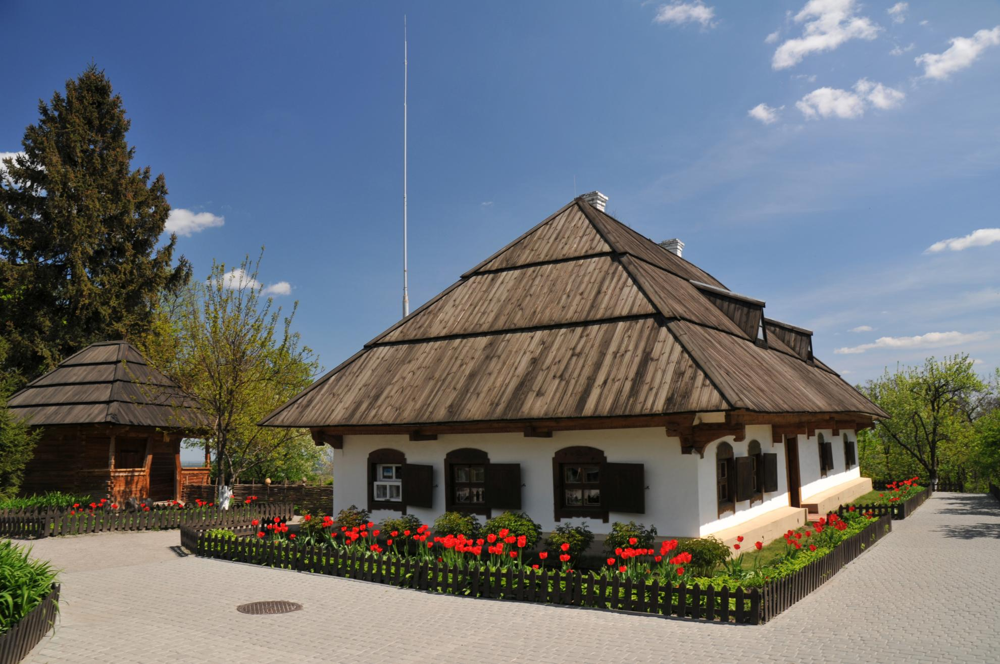
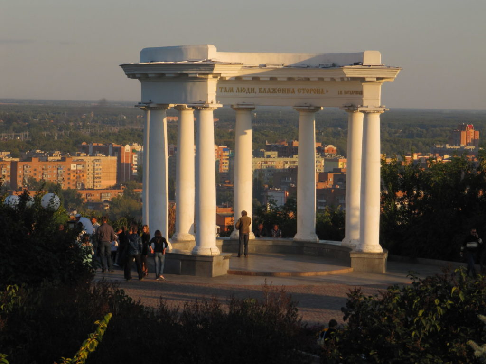

Свято-Успенський кафедральний собор — це перлина архітектури Полтави. Його історія сягає XVIII століття, коли його збудували як символ духовного відродження. У стінах собору зберігаються унікальні стародавні ікони, серед яких особливою популярністю користується ікона Успіння Богородиці. У соборі проводяться служби, концерти духовної музики, а також екскурсії для туристів.
Свято-Успенський кафедральний собор

Полтавський краєзнавчий музей — це музей, який збирає понад 300 тисяч експонатів. Серед них — археологічні знахідки, старовинні манускрипти, народне мистецтво та вироби ремісників Полтавщини. Музей пропонує інтерактивні виставки, які розповідають про історію регіону, а також майстер-класи з народних ремесел.
Полтавський краєзнавчий музей

Кругла площа — архітектурне серце Полтави. Вона була створена як частина генерального плану міста у XIX столітті. Тут розташовано корпуси адміністративних будівель, а також фонтан, який є улюбленим місцем зустрічей містян. Щороку тут проводяться ярмарки, фестивалі та концерти.
Кругла площа

Каштанова алея — це зелений оазис у центрі міста. Вона простягається уздовж мальовничого берега річки. Влітку каштани дарують прохолоду, а восени радують золотим листям. Алея є популярним місцем для занять спортом, прогулянок і пікніків.
Каштанова алея

Музей-садиба Івана Котляревського — це історичний комплекс, де збережено атмосферу XVIII століття. Відвідувачі можуть побачити кімнати, де працював автор "Енеїди", а також експонати, що ілюструють його побут та творчість.
Музей-садиба Івана Котляревського

Ротонда Дружби народів символізує єдність різних національностей, що мешкають у Полтаві. Ця архітектурна споруда, оточена парком, є чудовим місцем для відпочинку. З ротонди відкривається прекрасний краєвид на місто.
Ротонда Дружби народів